Alexia
de Lestapis
Mechanical Engineer · Medical Robotics & Biomedical Devices
I'm a mechanical engineer from EPFL (MSc, Minor in Biomedical Technologies), currently in Mountain View as R&D Engineer at Levita Magnetics on next-generation magnetically-controlled surgical tools.
My work sits at the intersection of mechanical design, robotics, and biology. I've designed implantable devices validated with surgeons, built robotic platforms for cancer research, led a 40-person student organization building open-source prosthetics, and competed internationally in space robotics. Equally at home in CAD, FEA, or Python building physical models.
Looking for R&D roles at startups building hardware that matters — surgical robotics, medtech, biomedical instrumentation. If you're working on something hard, let's talk.
.JPG)

Next-Gen Laparoscopic Grasper
Levita Magnetics · R&D Engineer · Mountain View, CA · 2026–Present
Levita Magnetics helps patients recover better and faster from abdominal surgery. Their MARS system uses Dynamic Magnetic Positioning™ — an external magnet arm that controls internal surgical tools through the abdominal wall, giving surgeons steady visualization and dynamic retraction without an extra trocar port. Fewer incisions, less pain, faster recovery.
As part of my master thesis, I am developing the next generation of magnetic laparoscopic graspers — staying aligned with that mission and pushing the technology further. I work across the full product development cycle:
- Ideation & concept development
- Prototyping & testing
- Simulation-driven design — structural FEA, tissue damage & grip, magnetic
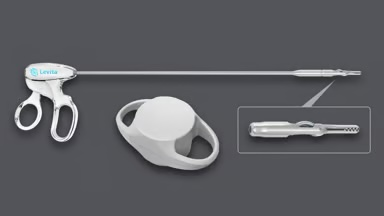
Minimally Invasive Intramedullary Fracture Device
Laboratory of Biomechanical Orthopedics, EPFL · 2025
Why did this need to exist?
Standard femoral fracture treatment requires 10–14 days of external fixation and immobilization. In this project, I designed a minimally invasive intramedullary device that deploys from inside the bone to stabilize the fracture, then retracts for removal.
What made it hard?
One mechanism had to satisfy four competing constraints simultaneously: sufficient stabilization force, be compatible with surgical instrumentation, extractability after loading, and fit within a femoral canal.
What I did
Designed the full proof-of-concept in SolidWorks, then validated it through two Abaqus FEA models simulating deployment, transverse loading, and removal.
Did it work?
Well enough to greenlight prototype fabrication as the device fulfilled all key requirements. Adding a hinge joint at the flange attachment was the decisive design move.
What didn't work
The bone model was a simplified cylinder, smaller female femoral canals weren't modeled. Miniaturizing the device for the actual patient population remains the open problem.
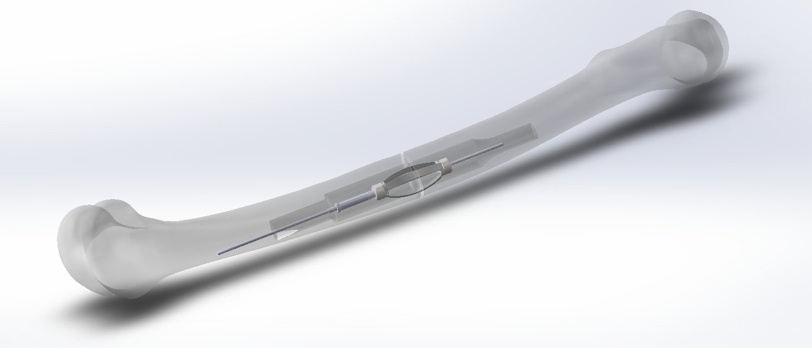
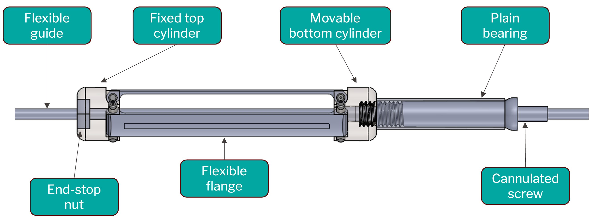

Robotic Organoid Micromanipulation Platform
MicroBioRobotic Systems Laboratory, EPFL · Prof. Sakar · 2024
Why did this need to exist?
Cancer biology labs study organoids to model disease and test therapies. Selecting specific organoids for downstream analysis like RNA sequencing requires physically picking them up or injecting agents into them. Fully manual protocols are slow, operator-dependent, and impossible to scale. This project built the robotic infrastructure and validated protocols for both automated aspiration and injection.
What made it hard?
Two distinct problems. First, system integration: the robot, pump, and microscope each ran on separate platforms with no shared interface. Second, the physics of matrigel: it's a viscoelastic gel, so organoid detachment behavior was unpredictable and needle positioning was non-linear. Manual operators unconsciously compensate for this while a robotic set-up doesn't.
What I did
Developed and iterated the aspiration and injection protocols experimentally, working directly with a biologist to understand what the biological side needed. Implemented a semi-automated workflow with , reducing manipulation time.
Did it work?
Two functional pipelines for aspiration and injection exist and were demonstrated. Organoid injection was actually a new, state-of-the-art result — manual injection of organoids embedded in matrigel had not been reliably achieved before; the robot's stability made it feasible where hands couldn't. The semi-automated pipeline significantly reduced operational time.
What didn't work
Aspiration was not reliably reproducible with the robot as matrigel stiffness varied batch to batch, changing detachment pressure unpredictably. Once detached, controlling organoid velocity inside the needle to allow for future expiration was unresolved. Additionally, full platform integration was not achieved, which fundamentally limited what the automation could do.


In-Line Filament Diameter Sensor & Machine Safety Architecture
EPFL Xplore · R&D Engineer · 2024
Why did this need to exist?
EPFL Xplore is building an open-source plastic recycling machine that converts 3D-printed waste into reusable FDM filament. For filament to be printable, diameter must sit within ±0.05 mm of 1.75 mm — a tolerance that shifts continuously with extrusion speed and temperature. Without real-time diameter feedback, there's no motor control loop and no way to detect failures like clogging. The machine needed eyes.
What made it hard?
The measurement has to be in-line at 160 mm/s — you can't pause the filament. Sub-millimeter accuracy means any mechanical play contaminates the reading. And every part had to be 3D-printable for open-source reproducibility.
What I did
Designed the sensor end-to-end: a lever-arm mechanism that amplifies displacement onto a linear potentiometer, with precise kinematic design to eliminate parasitic DoFs. Then developed the full calibration pipeline for real-time I2C readout. In parallel, designed the machine safety architecture — a 6-state FSM with an Arduino master hub aggregating all subsystem feedback and triggering shutdowns, fan activation, and alerts.
Did it work?
Combined measurement uncertainty hit U = ±0.011 mm at 95% confidence, beating the ±0.05 mm requirement by 4.5×. The sensor reliably detected out-of-range diameters and extrusion obstructions. Safety FSM fully defined and proof-of-concept hardware assembled.
What didn't work
Closed-loop motor control wasn't implemented within scope, so sensor performance under active control vibration is unvalidated. Full Eve integration (the safety hub) with the extruder controllers was deferred.

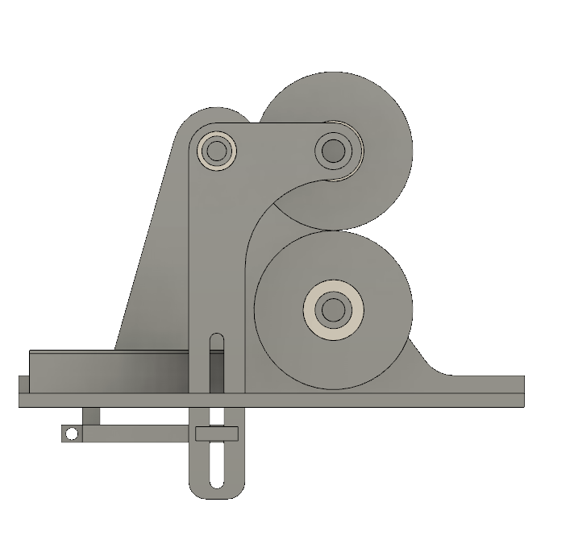
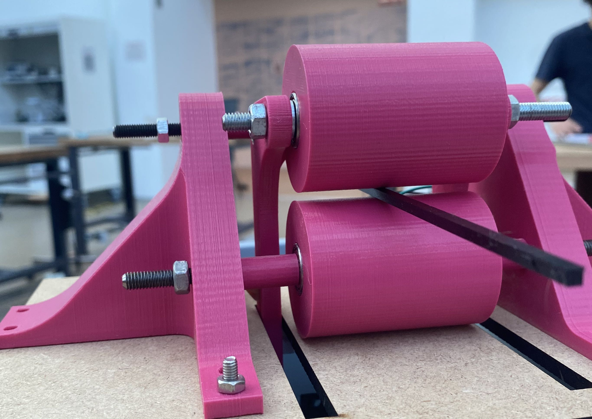
.jpg)
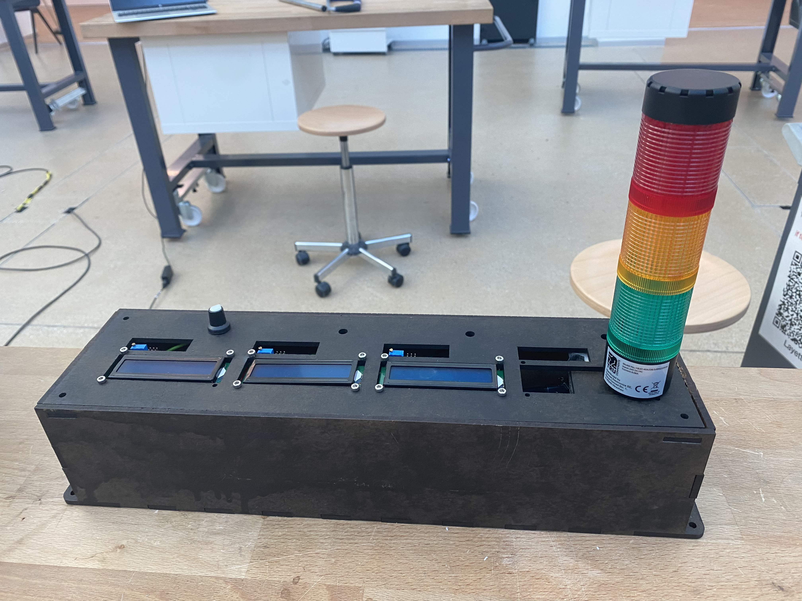

Xplore Rover Wheels
EPFL Xplore · Structure Team · 2022–2024
Why did this need to exist?
A Mars analog rover needs to navigate terrain ranging from loose sand to rocky obstacles up to 30cm — no pneumatic tires in a simulated Martian environment. The solution was a 3D printed rigid inner rim with a cast polyurethane coating and chevron grousers for grip.
What made it hard?
Three parallel optimization problems: grouser geometry to maximize traction across soil types, a PU casting process with a 10-minute working window before solidification, and mass — each wheel had a 1.2kg target within a 50kg total rover budget.
What I did
Designed the inner rim and grouser geometry based on soil mechanics principles. Developed the full casting protocol: 3D printed negative → silicone mould → PU pour → 24h cure. Then redesigned the entire production pipeline in year 2 — modular laser-cut and 3D printed moulds with beeswax release coating — cutting full wheel set production from ~1 month to 4 days.
Did it work?
2nd place overall in year 1 with an Excellence Award for navigation, and while year 2 didn't go as planned overall, the mechanical systems were highlighted as a strong point. No wheel failures across all terrain types — sand, mud, water, rocks.
What didn't work
Single silicone mould in year 1 meant one wheel at a time with damage risk at every iteration, limiting grouser design exploration. The year 2 production redesign directly addressed this.


Open-Source Myoelectric Arm Prosthesis
EPFL N-Pulse · Co-Founder & CTO · 2024–2025
Co-founded N-Pulse to build open-source biomedical technology at EPFL. As CTO, led three simultaneous teams (20 students across mechanical, electronics, and software) developing a 7-DoF myoelectric prosthetic arm controlled by a 16-channel EMG bracelet. Secured CHF 25,000 in funding and built org structure from scratch — grew to 40 active members.
Technical scope: EMG signal acquisition and processing for gesture classification, mechanical design of hand and wrist actuation system, computer vision pipeline for real-time control.


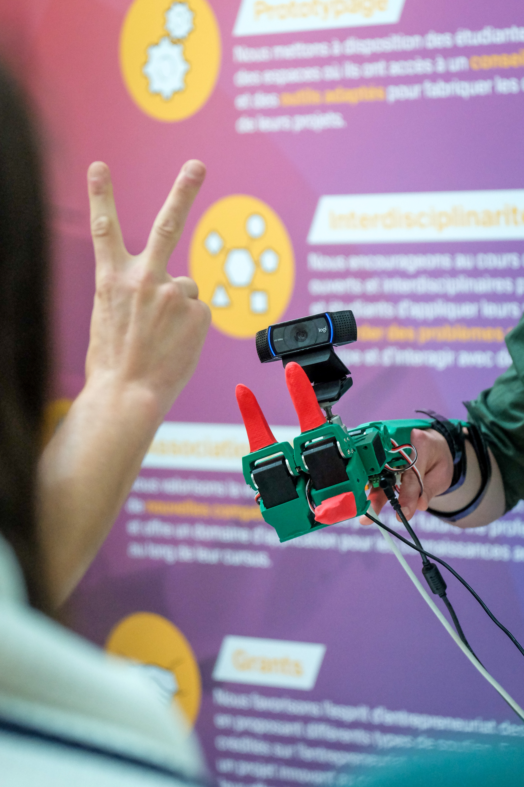


Martian Rover — EPFL Xplore
EPFL Xplore · Structure Team Leader → R&D Engineer · 2021–2024
Three years on EPFL's student space robotics team. As Structure Team Leader, led 6 engineers designing the rover chassis: modular service module, differential joint for terrain stability, carbon tube linkages to steering and driving, as well as the successful integration of sensors, electronics and the rets of the subsystems such as the robotic arm. Result: 3rd out of 60 at European Rover Challenge. Current Xplore rovers still use these mechanisms.

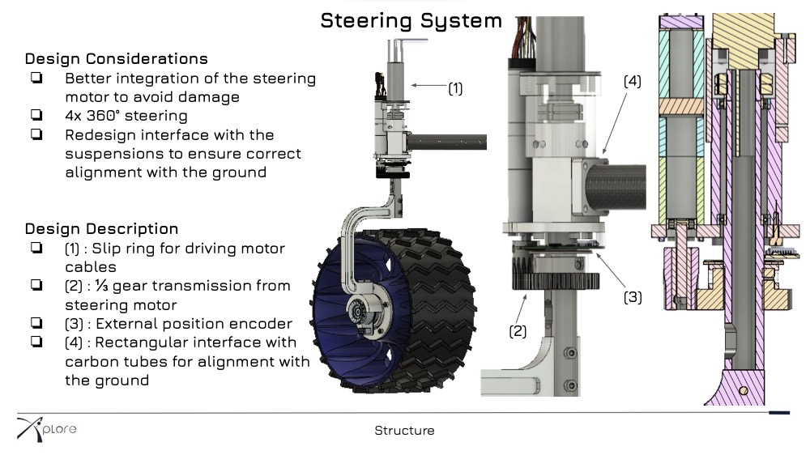
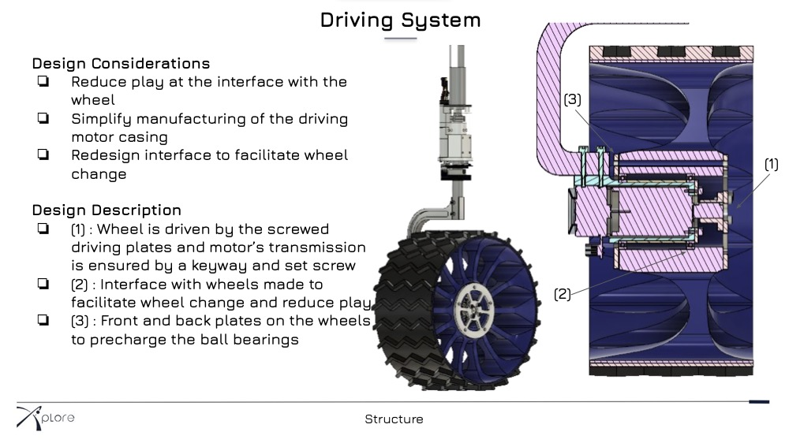
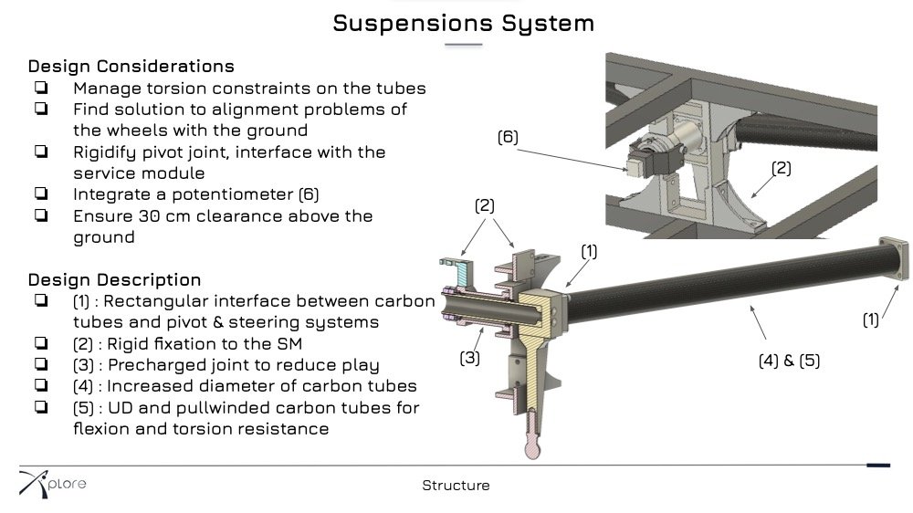
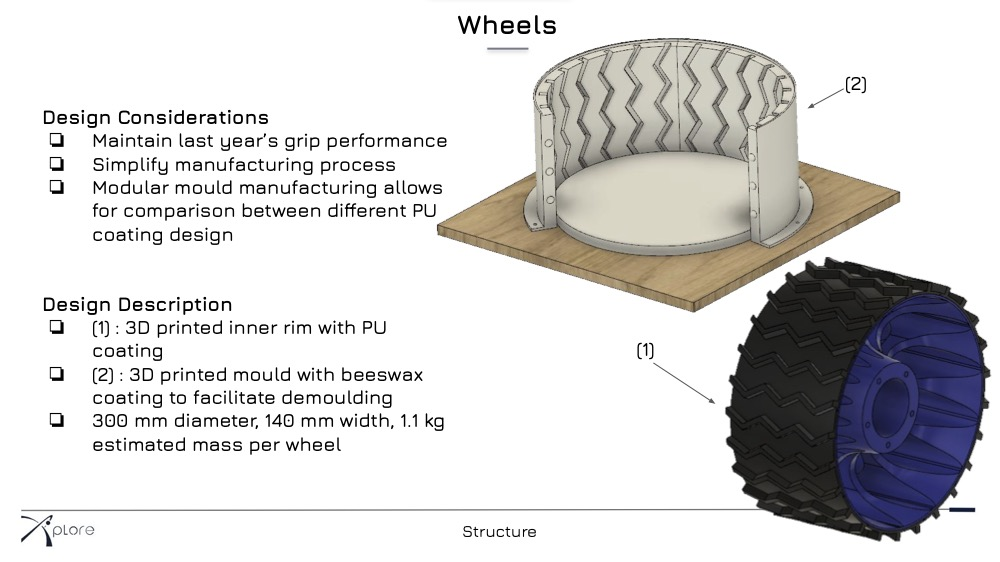
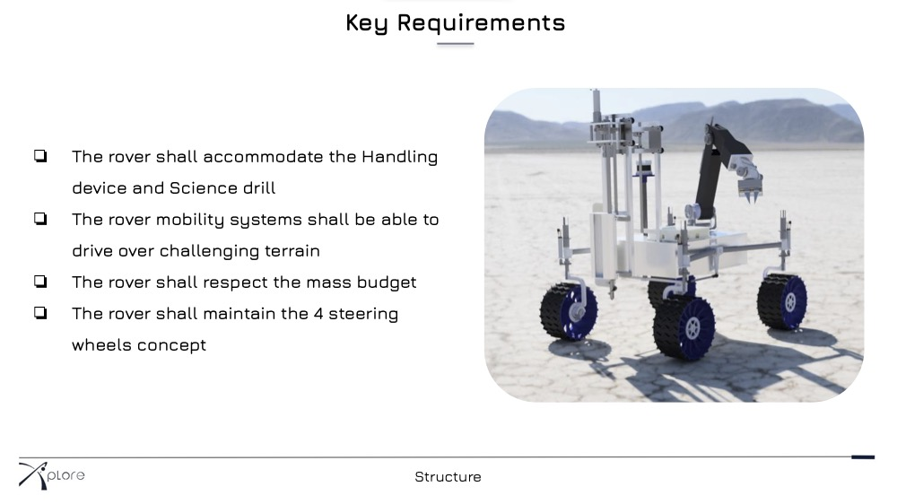

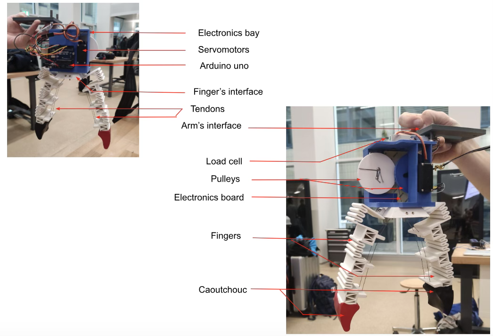
Flexible Robotic Gripper
click to flip ↩Flexible Robotic Gripper
What? Tendon-driven robotic gripper using spring-shaped flexible fingers actuated by servo motors and pulleys — designed to handle a variety of objects.
How? Designed finger geometry for the required rigidity through a dedicated study; tendons are rolled by two servo-driven pulleys (one per finger), translating rotation into finger curl.
Outcome Low part count, simple mechanism, high dexterity — successfully manipulates objects of varied shapes.
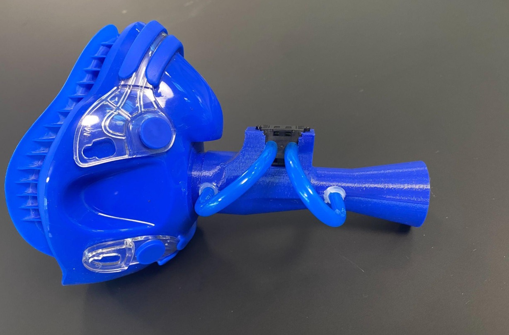
Wearable VO₂ Analyzer
click to flip ↩Wearable Respiratory Gas Analyzer — VO₂max
What? Designed a wearable device measuring VO₂, VCO₂ and RER for in-field athlete performance evaluation.
How? Designed a Venturi flow meter, integrated O₂/CO₂ sensors and ESP32 acquisition; calibrated against a clinical-grade reference setup.
Outcome Functional proof-of-concept validated in airflow; ready for full respiratory gas integration.
FarmBot — Autonomous Ag Robot
click to flip ↩FarmBot — Autonomous Agricultural Robot
What? Made a FarmBot fully autonomous by eliminating all manual watering and harvest decisions.
How? Integrated weather APIs, Penman-Monteith evapotranspiration model, and OpenCV plant spread detection via REST API pipeline.
Outcome Automated watering, sun regulation, and harvest detection end-to-end.

Data-Driven Design — Egg Box
click to flip ↩Data-Driven Design & Optimization — Egg Box
What? Optimized a cardboard egg cushion geometry to minimize drop impact force.
How? Ran Bayesian optimization (Gaussian Process + Expected Improvement) on a 3-parameter design space; fabricated prototypes by laser cutting and measured G-force with an ESP32 accelerometer.
Outcome Converged in ~10 iterations vs. 81 full-factorial tests; validated experimentally.

pH-Sensing Wound Dressing
click to flip ↩Composites Technology — pH-Sensing Wound Dressing
What? Smart calcium alginate wound dressing with colorimetric pH sensors for early infection detection.
How? Material selection, composite laminate mechanical modeling (ESAComp + Abaqus), wet-spinning production line design, and full cost analysis.
Outcome Skin-compliant dressing validated mechanically; market-competitive production cost.
Zebrafish Locomotion
click to flip ↩Computational Motor Control — Zebrafish Locomotion
What? Modeled zebrafish swimming locomotion using biologically plausible muscle activation controllers.
How? Implemented sine and sigmoid square-wave controllers in Python; ran grid search + Bayesian-style parameter sweeps to maximize forward speed.
Outcome Identified optimal locomotion parameters; square-wave activation outperformed sinusoidal baseline 3×.
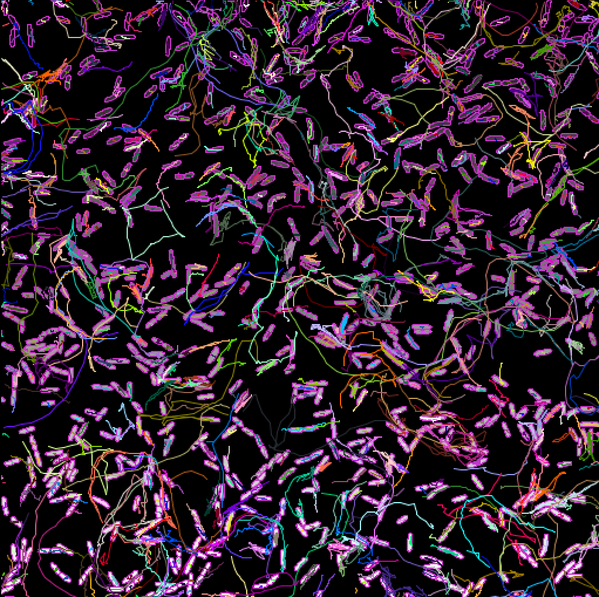
Mechanobiology — Bacterial Mechanics
click to flip ↩Mechanobiology — Bacterial Mechanics
What? Quantified mechanical behavior of bacteria under confinement and during surface motility.
How? Built image segmentation + tracking pipelines (OpenCV, Omnipose) on fluorescence microscopy time-lapses; computed pressure, nematic order, speed, and reversal rates.
Outcome Reproduced published GIP curves; characterized how pili gene mutations alter collective bacterial motion.
Design & Engineering
- CAD: SolidWorks, Fusion 360
- 2D drawings & GD&T
- FEA (Abaqus)
- Magnetic simulation (ANSYS)
- Structural & dynamical physics modelling
- Material selection
Biomedical
- EU MDR, ISO 13485, ISO 14971
- FMEA
- EMG & EEG signal processing
- Musculoskeletal biomechanics
- Micro-nano robotics
- Soft tissue mechanics
Prototyping
- FDM 3D printing
- CO₂ laser cutting
- Composite materials
- Workshop machining
Robotics Software & Automation
- Python / MATLAB
- C (basics)
- Computer vision (OpenCV)
- Sensor integration
- Robot control
- Basic electronics
Languages
- French — Native
- Spanish — Native
- English — C2
- German — A2